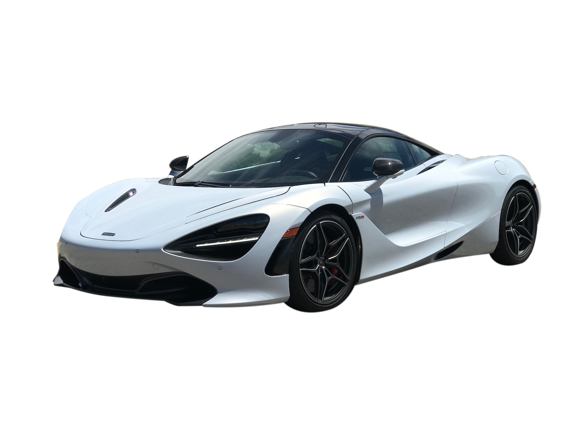

McLaren 720S
Ano: 2018
Cor: Laranja Papaya Spark, Prata Blade
Descrição:
Motorização e Desempenho:
Motor: V8 4.0 biturbo.
Potência: 720 cv.
Torque: 78,5 kgfm.
Câmbio: Automatizado de dupla embreagem, 7 marchas.
Tração: Traseira (RWD).
0 a 100 km/h: 2,9 segundos.
Velocidade máxima: 341 km/h.
Consumo médio: Cidade: 5,1 km/l, Estrada: 9,2 km/l.
Tecnologia e Conectividade:
Tela central de 8” com interface IRIS,
Sistema de telemetria para pista,
GPS, Bluetooth, câmera traseira,
Painel digital dobrável.
Segurança:
Controle de estabilidade proativo,
Frenagem ABS com vetorização de torque,
Airbags frontais e laterais,
Sensor de ponto cego e colisão frontal.
Design Exterior:
Portas tipo tesoura,
Carroceria em fibra de carbono,
Aerodinâmica ativa,
Faróis com design em formato de gota.
Interior e Conforto:
Assentos esportivos com acabamento Alcântara,
Volante em fibra de carbono,
Climatização digital de zona dupla,
Sistema de som Bowers & Wilkins (opcional).
Dimensões:
comprimento: 4.543 mm
Largura: 2.161 mm (com espelhos)
Altura: 1.196 mm
Entre-eixos: 2.670 mm
Porta-malas: 150 litros
Peso: 1.283 kg
Valor: R$ 3.590.000